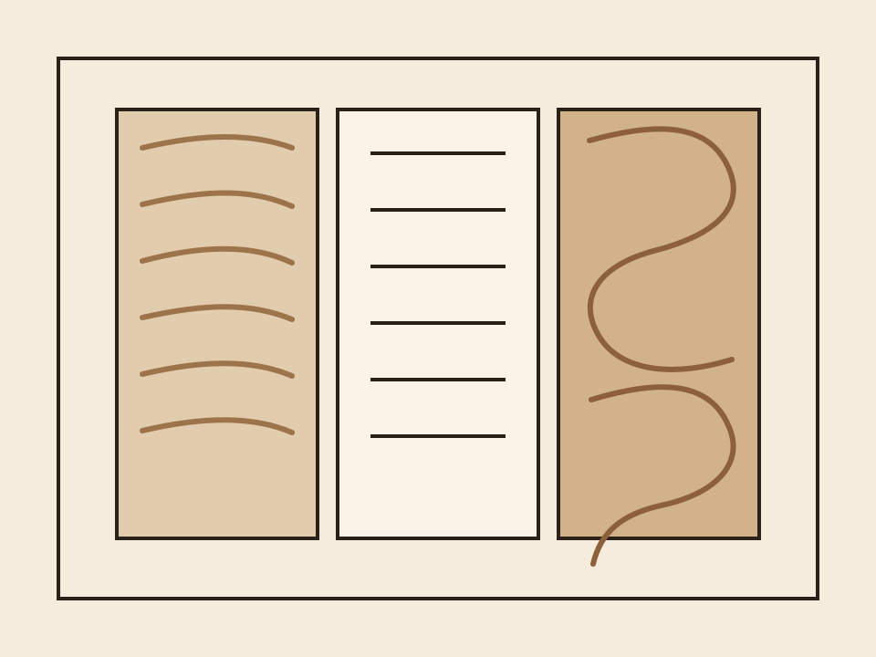
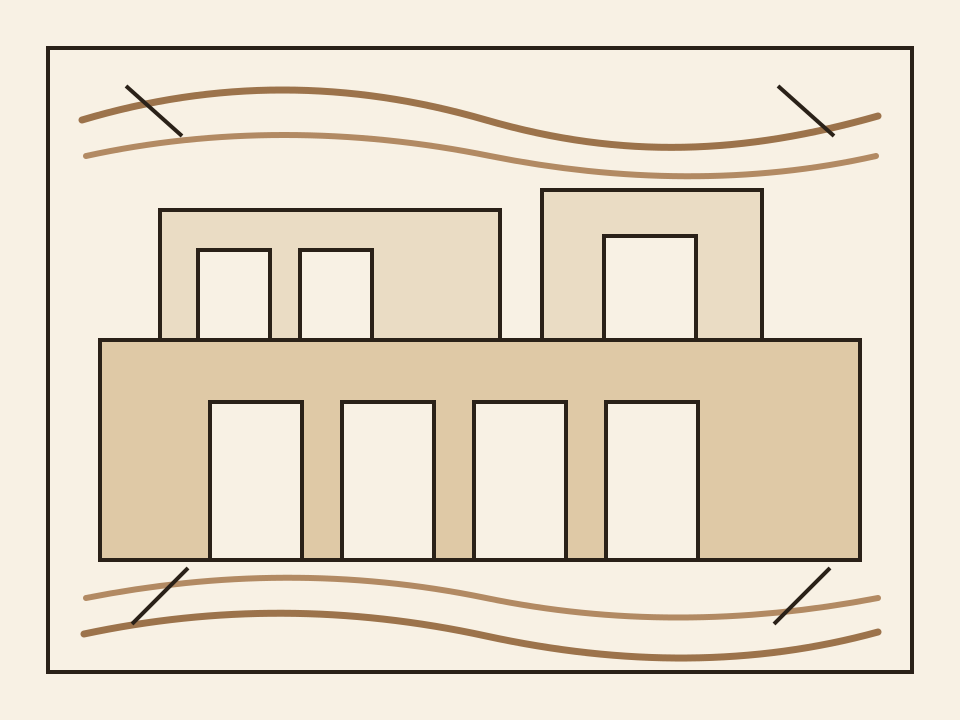

Charakter erhalten
Die Identität des Hauses bleibt sichtbar und verleiht dem Projekt seine unverwechselbare Ausstrahlung.
Das Projekt verbindet die Geschichte des Hauses mit einem hochwertigen Ausbau. So entsteht ein Auftritt, der Wertigkeit, Atmosphäre und Alltagstauglichkeit überzeugend zusammenführt.

Die Alte Schreinerei AG zeigt, wie aus gewachsener Substanz ein hochwertiges Umfeld für modernes Wohnen und Arbeiten entstehen kann. Das Ergebnis wirkt eigenständig, klar und dauerhaft attraktiv.
Die Identität des Hauses bleibt sichtbar und verleiht dem Projekt seine unverwechselbare Ausstrahlung.
Hochwertige Holzflächen bringen Wärme, Tiefe und eine besondere Atmosphäre in die Räume.
Die Flächen eignen sich für Wohnen, Arbeiten oder kombinierte Nutzung und lassen sich vielseitig denken.
Klare Linien, präzise Details und robuste Materialien sorgen für einen hochwertigen Gesamteindruck.

Helle Flächen, warme Materialien und ein präziser Ausbau schaffen Räume mit starker Präsenz. Das Projekt wirkt hochwertig, eigenständig und lädt vom ersten Moment an zum Bleiben ein.
Entdecken Sie die einzelnen Bereiche und gewinnen Sie einen Eindruck davon, wie vielseitig die Räume genutzt werden können.
Zu den Räumen